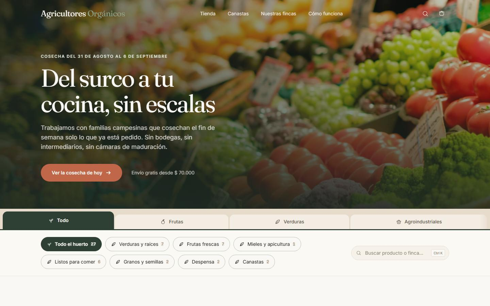
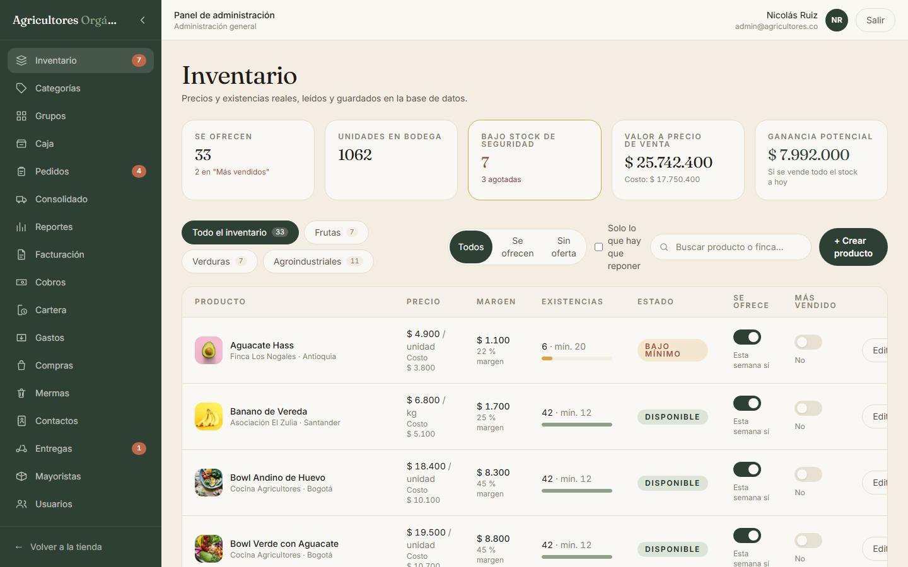
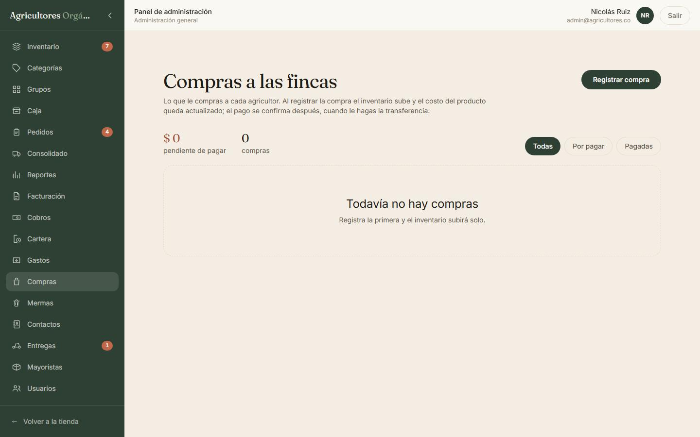
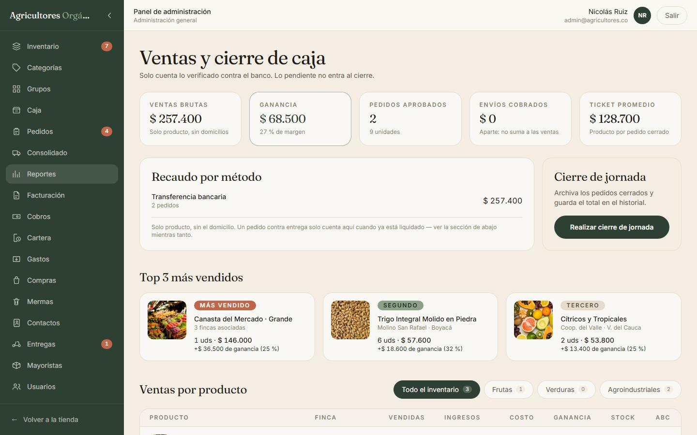
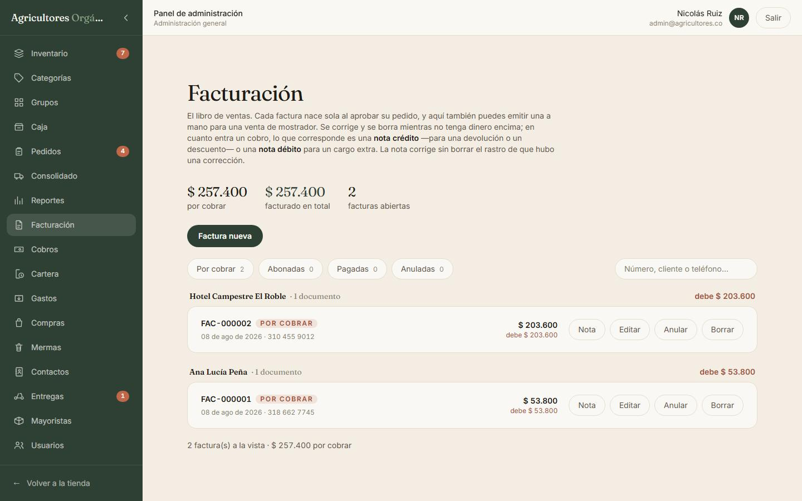
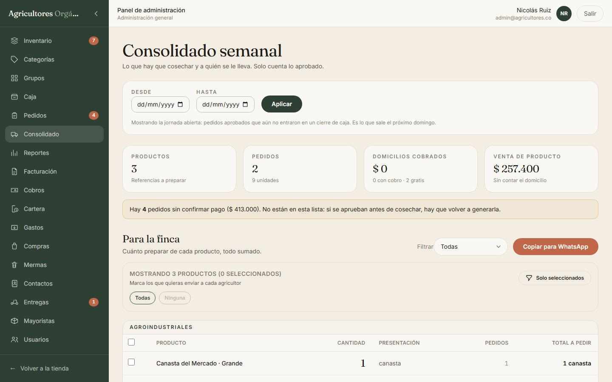

«Yo creo que quedaban como diez kilos»
El inventario vive en la memoria de alguien y en un cuaderno que nadie cuadra hasta fin de mes.
Cada venta, cada compra y cada descarte mueve el inventario en el mismo momento. Y no lo deja vender si no hay.
Para tiendas de fruta, verdura y mercado
La misma papa que usted pesa en la balanza es la que se le descuenta al paquete que alguien pidió por la página. Sin cuadernos, sin dos cuentas distintas y sin quedarse hasta las nueve cuadrando la caja.
De la compra en la finca al cierre del día
Baterías completas, todas pasando
Lo que tarda en responder, medido
Funciona sobre la red de Cloudflare
Lo que pasa hoy
Ninguno de estos líos es de tecnología. Son de plata. Así se ven hoy, y así quedan con el sistema.
El inventario vive en la memoria de alguien y en un cuaderno que nadie cuadra hasta fin de mes.
Cada venta, cada compra y cada descarte mueve el inventario en el mismo momento. Y no lo deja vender si no hay.
Se bota y ahí quedó. A fin de mes la ganancia le dice más de lo que de verdad le quedó en el cajón.
La merma sale con acta firmada, se valora al costo y se le resta a la ganancia del día. Y le muestra qué es lo que más se le está dañando.
Lo fiado se anota en un papelito al lado de la registradora, y el papelito se pierde.
El fiado y los abonos quedan contra la cédula del cliente, con cupo, fecha de vencimiento y quién recibió la plata.
Dos listas distintas que se descuadran el primer sábado que se llene el local.
La página y el mostrador descuentan del mismo montón. Si venden tres paquetes de 500 g, del granel salen 1,5 kg. Así de simple.
Cómo se usa
El sistema está armado alrededor de la jornada, que es como trabaja una tienda de verdad. Cada momento tiene sus pantallas.
Llega el carro con la remesa. Usted registra la compra: entra el surtido y queda anotado a quién le compró, a cómo se lo dejó y si ya le giró. Ese costo es el que después le dice cuánto se ganó de verdad con cada cosa.
El cajero pasa el lector o busca por nombre, pesa lo que va a granel y cobra. Si el cliente le abona una parte, el resto le queda anotado en la cuenta. El recibo se imprime si lo piden.
Al mismo tiempo la página recibe pedidos, del mismo catálogo y del mismo inventario.
Se revisa lo que no aguanta otro día y se da de baja con su acta. Se anotan los gastos. Y se cierra la jornada: el sistema congela las cifras, archiva los pedidos y le saca lo que quedó después de pagar mercancía, gastos y lo que se dañó.
Véalo funcionando
Grabado del sistema andando, sin montaje. Toque para reproducir.
Qué trae
Todas las imágenes son del sistema real, con datos de ejemplo de una tienda de fruta y verdura. Toque cualquiera para verla en grande.
Para el cajero
Hecha para atender con el cliente ahí parado: el cursor se devuelve solo al buscador después de cada producto, y el ticket nunca se le pierde de vista.
Para el cliente
El catálogo público con la cosecha de la semana, vendiendo del mismo inventario del mostrador.

Para el cliente
Donde se remata el pedido. La cédula es obligatoria: es lo que permite reconocer al cliente de una compra a otra y lo que se reporta al facturar.
Para el que maneja el surtido
Todo el catálogo con existencias, costo, margen y clasificación de cada referencia.

Para el que responde por la bodega
El cierre de la bodega: lo que se secó, se pudrió, se venció o se rompió sale del inventario con un acta detrás.
Para el que compra
Qué le compró a cada agricultor, a cómo, y si ya le giró. Al registrarla sube el surtido y se actualiza el costo del catálogo.

Para el que lleva las cuentas
Lo que se vendió, lo que costó y lo que quedó. Al cerrar, las cifras se congelan y los pedidos se archivan.

Para el que cobra
Cada venta aprobada saca su factura con numeración seguida. Los abonos se reparten contra las facturas abiertas del cliente.

Para el dueño
La mirada de arriba: las dos cajas sumadas, y las tarifas especiales del que compra al por mayor.

Lo que le cuida el negocio
Cada una responde a una forma concreta de perder plata. Y cada una está comprobada con una prueba automática.
Dos clientes comprando la última unidad al mismo tiempo: uno pasa, al otro se le explica. El inventario nunca queda en negativo.
Probado: 2 pedidos a la vez → 1 pasa, 1 se rechaza, queda en 0
Hasta la venta rápida del mostrador, que queda a nombre de «Consumidor final» con el documento genérico de la DIAN.
Sin cédula no cierra una venta, por ningún lado
El precio, el nombre y la receta se copian dentro del pedido. Si mañana sube el precio, la factura de ayer sigue diciendo lo de ayer.
Probado con devoluciones de canastas de días anteriores
El cajero puede cambiar cualquier precio —sin tope, así lo decidió el negocio— pero tiene que escribir por qué. Queda con su nombre y la hora.
Probado: precio cambiado sin motivo → no lo deja
Apenas se cierra una jornada, sus pedidos, gastos, cobros y actas quedan congelados. Para corregir se saca un documento nuevo.
Probado: borrar un gasto o un acta ya cerrada → no lo deja
Bloquea después de varios intentos fallidos desde la misma conexión, sin dejar por fuera al administrador que entra desde otro lado.
Probado: bloquea en el intento 9 — 6 ms contra 99 ms
Evidencia
No es una promesa: son las pruebas que corren contra el sistema completo, cada una sobre una base de datos recién creada.
| Batería | Qué revisa | Resultado |
|---|---|---|
| qa-pos | Venta de mostrador, fiado, devolución, cierre | ✓ |
| qa-granel | Peso decimal y paquetes web del mismo montón | ✓ |
| qa-mermas | Baja por merma, acta y efecto en la ganancia | ✓ |
| qa-cartera | Abonos, anticipos y reparto entre facturas | ✓ |
| qa-facturacion | Emisión, numeración y anulación | ✓ |
| qa-canastas | Recetas y disponible derivado | ✓ |
| qa-compras | Entrada de surtido y pago a fincas | ✓ |
| qa-credito | Cupo, vencimiento y recaudo | ✓ |
| qa-seguridad | Roles, concurrencia y validación de datos | ✓ |
| y 17 baterías más — 26 en total, todas pasando | ||
$ node worker/tests/qa-carga.mjs · 10 clientes · 12 s GET /api/products (catálogo) peticiones 1227 correctas 100.0 % latencia p50 90ms · p90 134ms · p99 325ms POST /api/auth/login peticiones 151 correctas 100.0 % POST login (clave equivocada) bloqueadas 1731 por límite de intentos ── Lectura ── Sin degradación a esta concurrencia.
Además: 123 pruebas unitarias del lado del navegador y compilación limpia. La clave se guarda con PBKDF2 de 100.000 vueltas — por eso entrar cuesta casi un segundo, y por eso adivinar a ciegas no le sirve a nadie.
Para arrancar
El sistema está hecho, probado y funcionando. Lo que falta es cargar el catálogo de su tienda, crear los usuarios del equipo y abrir la caja.